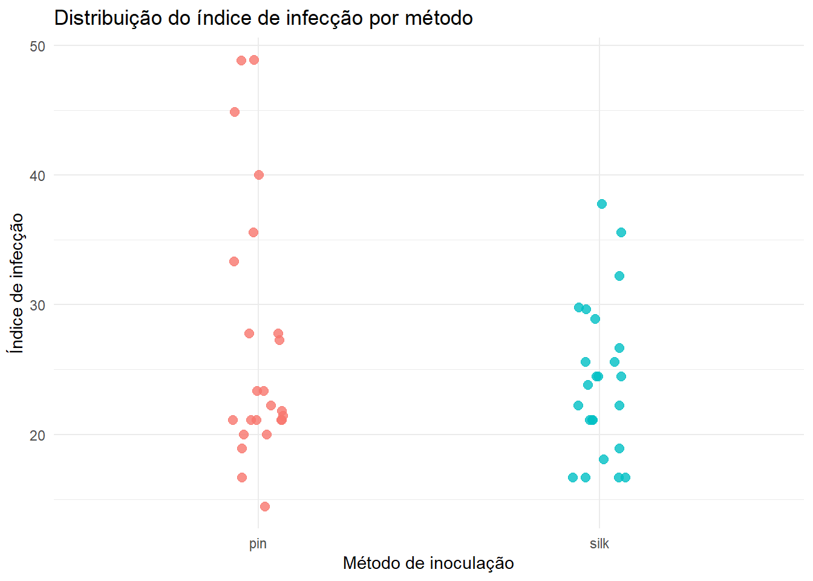
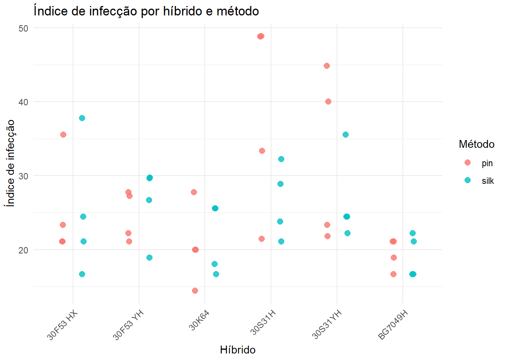
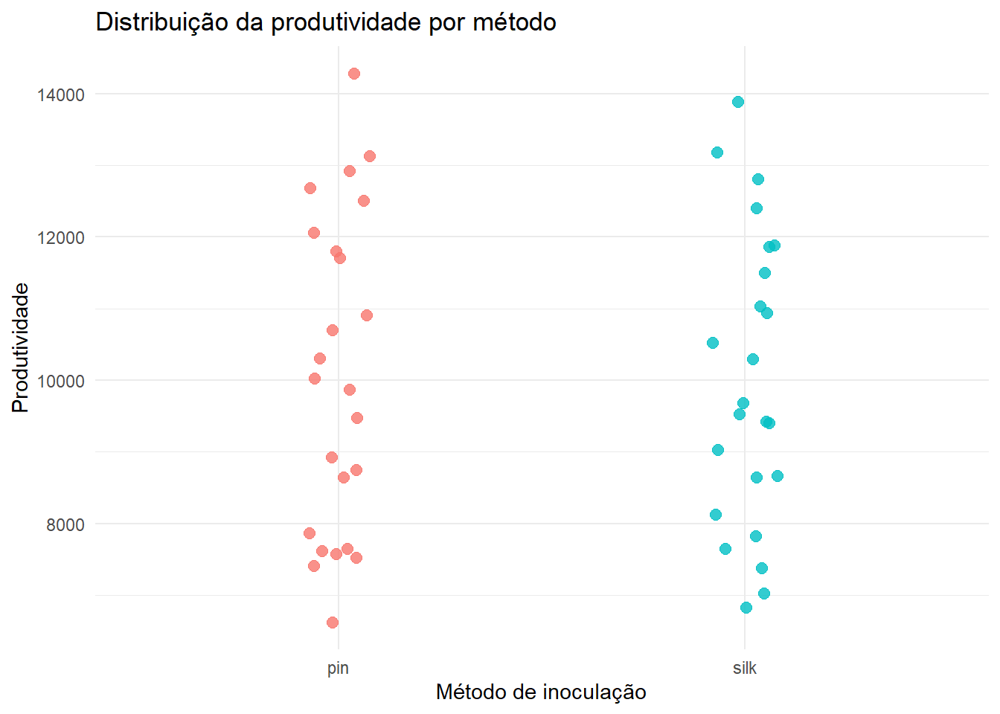
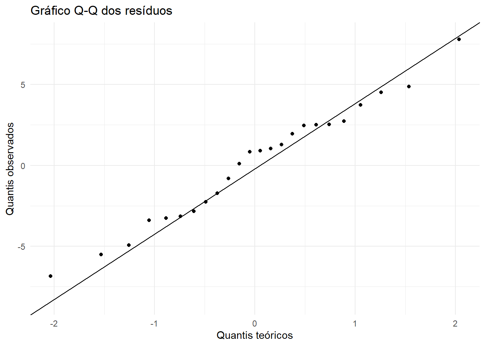
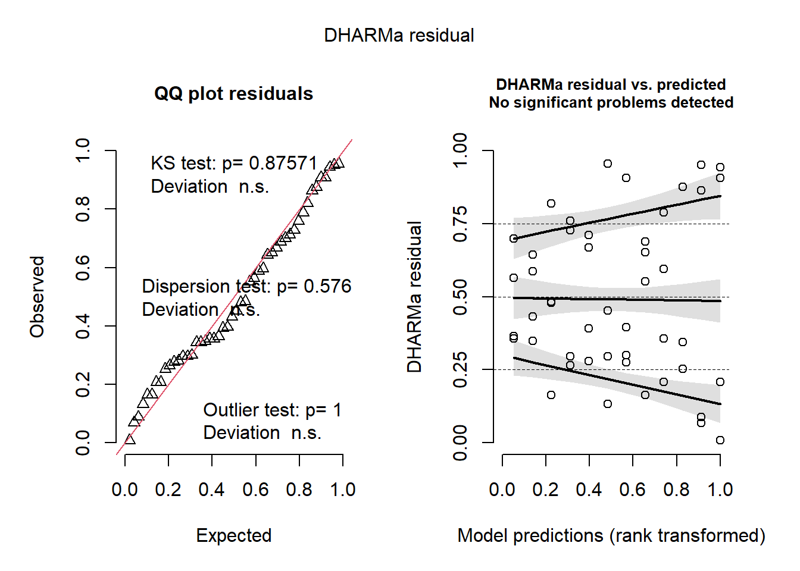
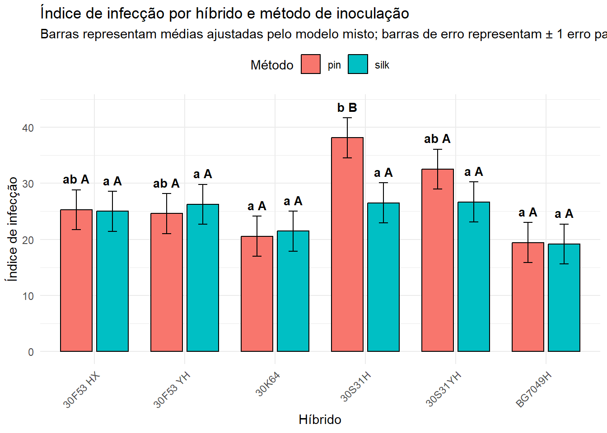

library(readxl)
library(tidyverse)
library(car)
library(lme4)
library(lmerTest)
library(DHARMa)
library(emmeans)
library(multcomp)
library(knitr)Delineamento em parcelas subdivididas
Objetivos da aula
Nesta aula, vamos analisar dados de um experimento com milho no qual se avaliou o índice de infecção em diferentes híbridos e métodos de inoculação. O exemplo é útil para discutir três pontos importantes em experimentação agrícola:
- a estrutura de um delineamento com parcelas subdivididas;
- a diferença entre uma ANOVA clássica com estratos de erro e um modelo linear misto;
- o uso de médias ajustadas, comparações múltiplas e gráficos interpretáveis.
A lógica estatística central é que nem todos os fatores são avaliados com a mesma precisão. Em parcelas subdivididas, o fator aplicado à parcela principal costuma ter um erro experimental diferente daquele aplicado à subparcela. Por isso, o modelo precisa reconhecer a estrutura hierárquica do experimento.
Pacotes
Usaremos o pacote {readxl} para importar os dados, {tidyverse} para manipulação e gráficos, {car} para o teste de Levene, {lme4} e {lmerTest} para modelos mistos, {DHARMa} para diagnóstico por resíduos simulados, {emmeans} para médias marginais estimadas e {multcomp} para letras de agrupamento.
Importação dos dados
milho <- read_excel("dados_diversos.xlsx", sheet = "milho")
milho# A tibble: 48 × 5
hybrid block method index yield
<chr> <dbl> <chr> <dbl> <dbl>
1 30F53 HX 1 pin 21.1 12920
2 30F53 HX 2 pin 21.1 9870
3 30F53 HX 3 pin 23.3 8920
4 30F53 HX 4 pin 35.6 13120
5 30F53 YH 1 pin 21.1 12060
6 30F53 YH 2 pin 22.2 7860
7 30F53 YH 3 pin 27.3 7410
8 30F53 YH 4 pin 27.8 10300
9 30K64 1 pin 20.0 11700
10 30K64 2 pin 20.0 10700
# ℹ 38 more rowsNeste conjunto de dados, consideramos as seguintes variáveis:
block: bloco ou repetição do experimento;hybrid: híbrido de milho;method: método de inoculação;index: índice de infecção;yield: produtividade.
Antes de ajustar qualquer modelo, é recomendável garantir que as variáveis categóricas estejam armazenadas como fatores.
milho <- milho |>
mutate(
block = as.factor(block),
hybrid = as.factor(hybrid),
method = as.factor(method)
)
glimpse(milho)Rows: 48
Columns: 5
$ hybrid <fct> 30F53 HX, 30F53 HX, 30F53 HX, 30F53 HX, 30F53 YH, 30F53 YH, 30F…
$ block <fct> 1, 2, 3, 4, 1, 2, 3, 4, 1, 2, 3, 4, 1, 2, 3, 4, 1, 2, 3, 4, 1, …
$ method <fct> pin, pin, pin, pin, pin, pin, pin, pin, pin, pin, pin, pin, pin…
$ index <dbl> 21.11283, 21.11283, 23.33524, 35.55845, 21.11283, 22.22403, 27.…
$ yield <dbl> 12920.000, 9870.000, 8920.000, 13120.000, 12060.000, 7860.000, …Visualização exploratória
A análise exploratória não substitui o modelo estatístico, mas ajuda a identificar padrões gerais, possíveis discrepâncias e a escala das variáveis.
Índice de infecção por método
milho |>
ggplot(aes(x = method, y = index, color = method)) +
geom_point(position = position_jitter(width = 0.08, height = 0), size = 2.5, alpha = 0.8) +
labs(
x = "Método de inoculação",
y = "Índice de infecção",
title = "Distribuição do índice de infecção por método"
) +
theme_minimal() +
theme(legend.position = "none")
O gráfico mostra a distribuição dos valores observados de index para cada método. Como os dados também dependem do híbrido e do bloco, diferenças aparentes entre métodos devem ser interpretadas com cautela nesta etapa.
Índice de infecção por híbrido e método
milho |>
ggplot(aes(x = hybrid, y = index, color = method)) +
geom_point(position = position_jitterdodge(jitter.width = 0.08, dodge.width = 0.6),
size = 2.5, alpha = 0.8) +
labs(
x = "Híbrido",
y = "Índice de infecção",
color = "Método",
title = "Índice de infecção por híbrido e método"
) +
theme_minimal() +
theme(axis.text.x = element_text(angle = 45, hjust = 1))
Este gráfico é mais informativo porque mostra simultaneamente os dois fatores de interesse: híbrido e método. Ele também permite antecipar uma possível interação entre híbrido e método. Existe interação quando a diferença entre métodos não é constante para todos os híbridos.
Produtividade por método
milho |>
ggplot(aes(x = method, y = yield, color = method)) +
geom_point(position = position_jitter(width = 0.08, height = 0), size = 2.5, alpha = 0.8) +
labs(
x = "Método de inoculação",
y = "Produtividade",
title = "Distribuição da produtividade por método"
) +
theme_minimal() +
theme(legend.position = "none")
Embora a análise principal desta aula seja feita para index, a variável yield pode ser analisada posteriormente com estrutura semelhante, desde que o objetivo biológico seja claramente definido.
Delineamento em parcelas subdivididas
Neste experimento, a estrutura estatística pode ser representada como um delineamento em parcelas subdivididas. Em termos práticos:
- os blocos representam fontes de variação controladas no campo;
- os híbridos são atribuídos às parcelas principais;
- os métodos são avaliados dentro das parcelas principais, nas subparcelas;
- a interação
hybrid:methodindica se o efeito do método depende do híbrido.
A principal consequência estatística é que há dois níveis de erro:
- erro da parcela principal, associado à comparação entre híbridos;
- erro da subparcela, associado ao método e à interação híbrido × método.
Uma forma didática de escrever o modelo é:
\[ y_{ijk} = \mu + B_i + H_j + (BH)_{ij} + M_k + (HM)_{jk} + \varepsilon_{ijk} \]
em que:
- \(y_{ijk}\) é a observação no bloco \(i\), híbrido \(j\) e método \(k\);
- \(\mu\) é a média geral;
- \(B_i\) é o efeito do bloco;
- \(H_j\) é o efeito do híbrido;
- \((BH)_{ij}\) é o erro da parcela principal, isto é, híbrido dentro de bloco;
- \(M_k\) é o efeito do método;
- \((HM)_{jk}\) é a interação híbrido × método;
- \(\varepsilon_{ijk}\) é o erro residual da subparcela.
Em modelos mistos, geralmente tratamos bloco e parcela principal dentro de bloco como efeitos aleatórios:
\[ y_{ijk} = \mu + H_j + M_k + (HM)_{jk} + b_i + p_{ij} + \varepsilon_{ijk} \]
com:
\[ b_i \sim N(0, \sigma_b^2), \qquad p_{ij} \sim N(0, \sigma_p^2), \qquad \varepsilon_{ijk} \sim N(0, \sigma^2) \]
Essa formulação explicita que existem componentes de variância diferentes para blocos, parcelas principais e subparcelas.
ANOVA clássica com aov()
A função aov() permite especificar estratos de erro usando Error(). Para parcelas subdivididas, podemos usar Error(block/hybrid), que informa ao R que híbridos estão associados ao estrato de parcelas principais dentro de blocos.
modelo_split <- aov(index ~ block + hybrid * method + Error(block/hybrid), data = milho)
summary(modelo_split)
Error: block
Df Sum Sq Mean Sq
block 3 592.2 197.4
Error: block:hybrid
Df Sum Sq Mean Sq F value Pr(>F)
hybrid 5 974.2 194.84 3.14 0.0389 *
Residuals 15 930.9 62.06
---
Signif. codes: 0 '***' 0.001 '**' 0.01 '*' 0.05 '.' 0.1 ' ' 1
Error: Within
Df Sum Sq Mean Sq F value Pr(>F)
method 1 79.61 79.61 4.726 0.0433 *
hybrid:method 5 265.28 53.06 3.150 0.0324 *
Residuals 18 303.18 16.84
---
Signif. codes: 0 '***' 0.001 '**' 0.01 '*' 0.05 '.' 0.1 ' ' 1A expressão hybrid * method é equivalente a:
hybrid + method + hybrid:methodPortanto, o modelo testa:
- efeito principal de híbrido;
- efeito principal de método;
- interação híbrido × método.
Em parcelas subdivididas, o teste para híbrido deve usar o erro da parcela principal. O teste para método e para a interação híbrido × método usa o erro da subparcela. Esse é o motivo pelo qual o modelo apresenta mais de um estrato de erro.
Pressupostos do modelo
Os principais pressupostos de modelos lineares para ANOVA são:
- independência dos erros;
- normalidade aproximada dos resíduos;
- homogeneidade de variâncias;
- estrutura correta do delineamento.
A independência depende principalmente do delineamento e da condução do experimento. Normalidade e homogeneidade podem ser avaliadas com gráficos e testes auxiliares.
Extração dos resíduos
No objeto produzido por aov() com estratos de erro, os resíduos ficam armazenados por estrato. Para o diagnóstico da subparcela, extraímos os resíduos do estrato Within.
residuos <- residuals(modelo_split$Within)
head(residuos) 25 26 27 28 29 30
-4.9172564 0.8336291 2.4636233 2.5305357 3.7418231 -3.3835494 Normalidade dos resíduos
O teste de Shapiro-Wilk avalia a hipótese nula de que os resíduos seguem uma distribuição normal.
\[ H_0: \text{os resíduos seguem distribuição normal} \]
\[ H_A: \text{os resíduos não seguem distribuição normal} \]
shapiro.test(residuos)
Shapiro-Wilk normality test
data: residuos
W = 0.9801, p-value = 0.8978Um valor de \(P\) pequeno sugere evidência contra a normalidade. Entretanto, em amostras pequenas, o teste pode ter baixa potência; em amostras grandes, diferenças pequenas podem gerar valores significativos. Por isso, o teste deve ser interpretado junto com gráficos de diagnóstico.
tibble(residuos = residuos) |>
ggplot(aes(sample = residuos)) +
stat_qq() +
stat_qq_line() +
labs(
x = "Quantis teóricos",
y = "Quantis observados",
title = "Gráfico Q-Q dos resíduos"
) +
theme_minimal()
Se os pontos seguem aproximadamente a reta, a suposição de normalidade é considerada razoável para fins práticos.
Homogeneidade de variâncias
A homogeneidade de variâncias significa que a variabilidade residual é aproximadamente semelhante entre os grupos comparados. O teste de Levene avalia essa condição.
leveneTest(index ~ hybrid * method, data = milho)Levene's Test for Homogeneity of Variance (center = median)
Df F value Pr(>F)
group 11 2.1493 0.04152 *
36
---
Signif. codes: 0 '***' 0.001 '**' 0.01 '*' 0.05 '.' 0.1 ' ' 1A hipótese nula é:
\[ H_0: \sigma_1^2 = \sigma_2^2 = \cdots = \sigma_g^2 \]
em que \(g\) é o número de combinações entre híbridos e métodos.
Neste exemplo, usamos a combinação hybrid * method porque a unidade comparativa final envolve os tratamentos formados pela combinação entre os dois fatores. Como o delineamento é hierárquico, o teste de Levene deve ser visto como diagnóstico auxiliar, não como substituto da modelagem correta.
Modelo linear misto
A abordagem com modelos mistos é geralmente mais flexível para experimentos com estrutura hierárquica. Aqui, híbrido, método e sua interação são tratados como efeitos fixos, pois representam os tratamentos de interesse. Bloco e parcela principal dentro de bloco são tratados como efeitos aleatórios.
modelo_misto <- lmer(
index ~ hybrid * method + (1 | block) + (1 | block:hybrid),
data = milho
)A especificação pode ser lida assim:
index ~ hybrid * method: efeitos fixos de híbrido, método e interação;(1 | block): intercepto aleatório para bloco;(1 | block:hybrid): intercepto aleatório para a parcela principal, isto é, cada combinação bloco × híbrido.
Esse modelo reconhece que observações dentro da mesma parcela principal tendem a ser mais semelhantes entre si do que observações de parcelas diferentes.
ANOVA do modelo misto
anova(modelo_misto)Type III Analysis of Variance Table with Satterthwaite's method
Sum Sq Mean Sq NumDF DenDF F value Pr(>F)
hybrid 264.409 52.882 5 15 3.1397 0.03891 *
method 79.606 79.606 1 18 4.7263 0.04329 *
hybrid:method 265.281 53.056 5 18 3.1500 0.03240 *
---
Signif. codes: 0 '***' 0.001 '**' 0.01 '*' 0.05 '.' 0.1 ' ' 1A tabela de ANOVA do modelo misto fornece testes para os efeitos fixos. O pacote {lmerTest} adiciona aproximações para graus de liberdade e valores de \(P\), frequentemente usando métodos como Satterthwaite ou Kenward-Roger, dependendo da configuração.
A interpretação segue a ordem lógica:
- primeiro verificar se a interação
hybrid:methodé relevante; - se a interação for importante, interpretar o efeito de método dentro de cada híbrido e o efeito de híbrido dentro de cada método;
- se a interação não for importante, os efeitos principais podem ser interpretados de forma mais direta.
Componentes de variância
summary(modelo_misto)Linear mixed model fit by REML. t-tests use Satterthwaite's method [
lmerModLmerTest]
Formula: index ~ hybrid * method + (1 | block) + (1 | block:hybrid)
Data: milho
REML criterion at convergence: 247.4
Scaled residuals:
Min 1Q Median 3Q Max
-1.93617 -0.35931 -0.02199 0.46970 1.25419
Random effects:
Groups Name Variance Std.Dev.
block:hybrid (Intercept) 22.61 4.755
block (Intercept) 11.28 3.358
Residual 16.84 4.104
Number of obs: 48, groups: block:hybrid, 24; block, 4
Fixed effects:
Estimate Std. Error df t value Pr(>|t|)
(Intercept) 2.528e+01 3.561e+00 1.855e+01 7.099 1.08e-06 ***
hybrid30F53 YH -6.819e-01 4.441e+00 2.285e+01 -0.154 0.87933
hybrid30K64 -4.723e+00 4.441e+00 2.285e+01 -1.063 0.29874
hybrid30S31H 1.284e+01 4.441e+00 2.285e+01 2.891 0.00828 **
hybrid30S31YH 7.223e+00 4.441e+00 2.285e+01 1.626 0.11761
hybridBG7049H -5.834e+00 4.441e+00 2.285e+01 -1.314 0.20204
methodsilk -2.778e-01 2.902e+00 1.800e+01 -0.096 0.92479
hybrid30F53 YH:methodsilk 1.919e+00 4.104e+00 1.800e+01 0.468 0.64573
hybrid30K64:methodsilk 1.181e+00 4.104e+00 1.800e+01 0.288 0.77688
hybrid30S31H:methodsilk -1.133e+01 4.104e+00 1.800e+01 -2.761 0.01287 *
hybrid30S31YH:methodsilk -5.556e+00 4.104e+00 1.800e+01 -1.354 0.19256
hybridBG7049H:methodsilk 4.974e-14 4.104e+00 1.800e+01 0.000 1.00000
---
Signif. codes: 0 '***' 0.001 '**' 0.01 '*' 0.05 '.' 0.1 ' ' 1
Correlation of Fixed Effects:
(Intr) hy30F53YH hy30K64 hy30S31H hy30S31YH hyBG7049H mthdsl
hybr30F53YH -0.624
hybrid30K64 -0.624 0.500
hybrd30S31H -0.624 0.500 0.500
hybr30S31YH -0.624 0.500 0.500 0.500
hybrBG7049H -0.624 0.500 0.500 0.500 0.500
methodsilk -0.407 0.327 0.327 0.327 0.327 0.327
hyb30F53YH: 0.288 -0.462 -0.231 -0.231 -0.231 -0.231 -0.707
hybrd30K64: 0.288 -0.231 -0.462 -0.231 -0.231 -0.231 -0.707
hybr30S31H: 0.288 -0.231 -0.231 -0.462 -0.231 -0.231 -0.707
hyb30S31YH: 0.288 -0.231 -0.231 -0.231 -0.462 -0.231 -0.707
hybBG7049H: 0.288 -0.231 -0.231 -0.231 -0.231 -0.462 -0.707
h30F53YH: h30K64: h30S31H: h30S31YH:
hybr30F53YH
hybrid30K64
hybrd30S31H
hybr30S31YH
hybrBG7049H
methodsilk
hyb30F53YH:
hybrd30K64: 0.500
hybr30S31H: 0.500 0.500
hyb30S31YH: 0.500 0.500 0.500
hybBG7049H: 0.500 0.500 0.500 0.500 O resumo do modelo mostra os componentes de variância dos efeitos aleatórios. Esses componentes indicam quanto da variação total é atribuída a:
- diferenças entre blocos;
- diferenças entre parcelas principais dentro de blocos;
- variação residual entre subparcelas.
Diagnóstico com resíduos simulados
O pacote {DHARMa} usa simulação para avaliar os resíduos de modelos ajustados. Essa abordagem é útil porque resíduos simulados podem ser aplicados a diferentes classes de modelos.
res_sim <- simulateResiduals(modelo_misto)
plot(res_sim)
Os gráficos ajudam a avaliar:
- desvios globais da distribuição esperada dos resíduos;
- padrões entre resíduos e valores preditos;
- possíveis valores extremos;
- heterogeneidade de variância.
Em modelos lineares gaussianos simples, gráficos clássicos de resíduos também são úteis. Em modelos mistos, o diagnóstico por simulação fornece uma verificação adicional.
Médias marginais estimadas
As médias marginais estimadas, também chamadas de least-squares means ou estimated marginal means, são médias ajustadas pelo modelo. Elas são preferíveis às médias aritméticas simples quando há estrutura de delineamento, desbalanceamento ou efeitos adicionais no modelo.
Comparação de métodos dentro de cada híbrido
medias_metodo_por_hibrido <- emmeans(modelo_misto, ~ method | hybrid)
medias_metodo_por_hibridohybrid = 30F53 HX:
method emmean SE df lower.CL upper.CL
pin 25.3 3.56 18.6 17.8 32.7
silk 25.0 3.56 18.6 17.5 32.5
hybrid = 30F53 YH:
method emmean SE df lower.CL upper.CL
pin 24.6 3.56 18.6 17.1 32.1
silk 26.2 3.56 18.6 18.8 33.7
hybrid = 30K64:
method emmean SE df lower.CL upper.CL
pin 20.6 3.56 18.6 13.1 28.0
silk 21.5 3.56 18.6 14.0 28.9
hybrid = 30S31H:
method emmean SE df lower.CL upper.CL
pin 38.1 3.56 18.6 30.7 45.6
silk 26.5 3.56 18.6 19.0 34.0
hybrid = 30S31YH:
method emmean SE df lower.CL upper.CL
pin 32.5 3.56 18.6 25.0 40.0
silk 26.7 3.56 18.6 19.2 34.1
hybrid = BG7049H:
method emmean SE df lower.CL upper.CL
pin 19.4 3.56 18.6 12.0 26.9
silk 19.2 3.56 18.6 11.7 26.6
Degrees-of-freedom method: kenward-roger
Confidence level used: 0.95 Essas médias respondem à pergunta:
Para cada híbrido, os métodos de inoculação diferem quanto ao índice de infecção?
pares_metodo_por_hibrido <- pairs(medias_metodo_por_hibrido, adjust = "tukey")
pares_metodo_por_hibridohybrid = 30F53 HX:
contrast estimate SE df t.ratio p.value
pin - silk 0.278 2.9 18 0.096 0.9248
hybrid = 30F53 YH:
contrast estimate SE df t.ratio p.value
pin - silk -1.641 2.9 18 -0.565 0.5787
hybrid = 30K64:
contrast estimate SE df t.ratio p.value
pin - silk -0.903 2.9 18 -0.311 0.7593
hybrid = 30S31H:
contrast estimate SE df t.ratio p.value
pin - silk 11.608 2.9 18 4.000 0.0008
hybrid = 30S31YH:
contrast estimate SE df t.ratio p.value
pin - silk 5.834 2.9 18 2.010 0.0596
hybrid = BG7049H:
contrast estimate SE df t.ratio p.value
pin - silk 0.278 2.9 18 0.096 0.9248
Degrees-of-freedom method: kenward-roger Comparação de híbridos dentro de cada método
medias_hibrido_por_metodo <- emmeans(modelo_misto, ~ hybrid | method)
medias_hibrido_por_metodomethod = pin:
hybrid emmean SE df lower.CL upper.CL
30F53 HX 25.3 3.56 18.6 17.8 32.7
30F53 YH 24.6 3.56 18.6 17.1 32.1
30K64 20.6 3.56 18.6 13.1 28.0
30S31H 38.1 3.56 18.6 30.7 45.6
30S31YH 32.5 3.56 18.6 25.0 40.0
BG7049H 19.4 3.56 18.6 12.0 26.9
method = silk:
hybrid emmean SE df lower.CL upper.CL
30F53 HX 25.0 3.56 18.6 17.5 32.5
30F53 YH 26.2 3.56 18.6 18.8 33.7
30K64 21.5 3.56 18.6 14.0 28.9
30S31H 26.5 3.56 18.6 19.0 34.0
30S31YH 26.7 3.56 18.6 19.2 34.1
BG7049H 19.2 3.56 18.6 11.7 26.6
Degrees-of-freedom method: kenward-roger
Confidence level used: 0.95 Essas médias respondem à pergunta:
Dentro de cada método de inoculação, quais híbridos diferem quanto ao índice de infecção?
pares_hibrido_por_metodo <- pairs(medias_hibrido_por_metodo, adjust = "tukey")
pares_hibrido_por_metodomethod = pin:
contrast estimate SE df t.ratio p.value
30F53 HX - 30F53 YH 0.682 4.44 22.8 0.154 1.0000
30F53 HX - 30K64 4.723 4.44 22.8 1.063 0.8907
30F53 HX - 30S31H -12.838 4.44 22.8 -2.891 0.0780
30F53 HX - 30S31YH -7.223 4.44 22.8 -1.626 0.5906
30F53 HX - BG7049H 5.834 4.44 22.8 1.314 0.7748
30F53 YH - 30K64 4.041 4.44 22.8 0.910 0.9400
30F53 YH - 30S31H -13.520 4.44 22.8 -3.044 0.0568
30F53 YH - 30S31YH -7.905 4.44 22.8 -1.780 0.4972
30F53 YH - BG7049H 5.152 4.44 22.8 1.160 0.8507
30K64 - 30S31H -17.561 4.44 22.8 -3.954 0.0074
30K64 - 30S31YH -11.945 4.44 22.8 -2.690 0.1162
30K64 - BG7049H 1.111 4.44 22.8 0.250 0.9998
30S31H - 30S31YH 5.616 4.44 22.8 1.264 0.8006
30S31H - BG7049H 18.672 4.44 22.8 4.204 0.0041
30S31YH - BG7049H 13.057 4.44 22.8 2.940 0.0706
method = silk:
contrast estimate SE df t.ratio p.value
30F53 HX - 30F53 YH -1.237 4.44 22.8 -0.278 0.9997
30F53 HX - 30K64 3.542 4.44 22.8 0.797 0.9651
30F53 HX - 30S31H -1.508 4.44 22.8 -0.340 0.9993
30F53 HX - 30S31YH -1.667 4.44 22.8 -0.375 0.9989
30F53 HX - BG7049H 5.834 4.44 22.8 1.314 0.7748
30F53 YH - 30K64 4.779 4.44 22.8 1.076 0.8858
30F53 YH - 30S31H -0.271 4.44 22.8 -0.061 1.0000
30F53 YH - 30S31YH -0.430 4.44 22.8 -0.097 1.0000
30F53 YH - BG7049H 7.071 4.44 22.8 1.592 0.6116
30K64 - 30S31H -5.050 4.44 22.8 -1.137 0.8608
30K64 - 30S31YH -5.209 4.44 22.8 -1.173 0.8450
30K64 - BG7049H 2.292 4.44 22.8 0.516 0.9950
30S31H - 30S31YH -0.159 4.44 22.8 -0.036 1.0000
30S31H - BG7049H 7.342 4.44 22.8 1.653 0.5741
30S31YH - BG7049H 7.501 4.44 22.8 1.689 0.5522
Degrees-of-freedom method: kenward-roger
P value adjustment: tukey method for comparing a family of 6 estimates Letras de agrupamento
As letras de agrupamento são uma forma compacta de apresentar comparações múltiplas. Grupos que compartilham a mesma letra não diferem estatisticamente ao nível adotado.
Neste material, usaremos a seguinte convenção:
- letras minúsculas comparam híbridos dentro de cada método;
- letras maiúsculas comparam métodos dentro de cada híbrido.
Letras para híbridos dentro de método
letras_hibrido <- cld(
medias_hibrido_por_metodo,
adjust = "tukey",
Letters = letters
) |>
as_tibble() |>
mutate(
letra_hibrido = str_trim(.group)
) |>
dplyr::select(hybrid, method, letra_hibrido)Note: adjust = "tukey" was changed to "sidak"
because "tukey" is only appropriate for one set of pairwise comparisonsletras_hibrido# A tibble: 12 × 3
hybrid method letra_hibrido
<fct> <fct> <chr>
1 BG7049H pin a
2 30K64 pin a
3 30F53 YH pin ab
4 30F53 HX pin ab
5 30S31YH pin ab
6 30S31H pin b
7 BG7049H silk a
8 30K64 silk a
9 30F53 HX silk a
10 30F53 YH silk a
11 30S31H silk a
12 30S31YH silk a Letras para métodos dentro de híbrido
letras_metodo <- cld(
medias_metodo_por_hibrido,
adjust = "tukey",
Letters = LETTERS
) |>
as_tibble() |>
mutate(
letra_metodo = str_trim(.group)
) |>
dplyr::select(hybrid, method, letra_metodo)Note: adjust = "tukey" was changed to "sidak"
because "tukey" is only appropriate for one set of pairwise comparisonsletras_metodo# A tibble: 12 × 3
hybrid method letra_metodo
<fct> <fct> <chr>
1 30F53 HX silk A
2 30F53 HX pin A
3 30F53 YH pin A
4 30F53 YH silk A
5 30K64 pin A
6 30K64 silk A
7 30S31H silk A
8 30S31H pin B
9 30S31YH silk A
10 30S31YH pin A
11 BG7049H silk A
12 BG7049H pin A Tabela final de médias ajustadas
Agora combinamos as médias estimadas com as letras de comparação.
tabela_medias <- as_tibble(emmeans(modelo_misto, ~ hybrid * method)) |>
left_join(letras_hibrido, by = c("hybrid", "method")) |>
left_join(letras_metodo, by = c("hybrid", "method")) |>
mutate(
letras = paste0(letra_hibrido, " ", letra_metodo),
emmean = round(emmean, 1),
SE = round(SE, 2),
lower.CL = round(lower.CL, 1),
upper.CL = round(upper.CL, 1)
) |>
dplyr::select(hybrid, method, emmean, SE, lower.CL, upper.CL, letras)
tabela_medias |>
kable(
col.names = c("Híbrido", "Método", "Média ajustada", "EP", "LI 95%", "LS 95%", "Letras"),
caption = "Médias ajustadas do índice de infecção para cada combinação entre híbrido e método."
)| Híbrido | Método | Média ajustada | EP | LI 95% | LS 95% | Letras |
|---|---|---|---|---|---|---|
| 30F53 HX | pin | 25.3 | 3.56 | 17.8 | 32.7 | ab A |
| 30F53 YH | pin | 24.6 | 3.56 | 17.1 | 32.1 | ab A |
| 30K64 | pin | 20.6 | 3.56 | 13.1 | 28.0 | a A |
| 30S31H | pin | 38.1 | 3.56 | 30.7 | 45.6 | b B |
| 30S31YH | pin | 32.5 | 3.56 | 25.0 | 40.0 | ab A |
| BG7049H | pin | 19.4 | 3.56 | 12.0 | 26.9 | a A |
| 30F53 HX | silk | 25.0 | 3.56 | 17.5 | 32.5 | a A |
| 30F53 YH | silk | 26.2 | 3.56 | 18.8 | 33.7 | a A |
| 30K64 | silk | 21.5 | 3.56 | 14.0 | 28.9 | a A |
| 30S31H | silk | 26.5 | 3.56 | 19.0 | 34.0 | a A |
| 30S31YH | silk | 26.7 | 3.56 | 19.2 | 34.1 | a A |
| BG7049H | silk | 19.2 | 3.56 | 11.7 | 26.6 | a A |
A coluna emmean apresenta a média ajustada pelo modelo misto. O erro padrão (SE) expressa a incerteza associada à média estimada. Os limites lower.CL e upper.CL representam o intervalo de confiança de 95%.
Gráfico com médias ajustadas
O gráfico abaixo é construído a partir das médias ajustadas pelo modelo, não a partir de valores digitados manualmente. Essa é a abordagem recomendada porque evita erros de transcrição e torna o relatório reprodutível.
df_grafico <- as_tibble(emmeans(modelo_misto, ~ hybrid * method)) |>
left_join(letras_hibrido, by = c("hybrid", "method")) |>
left_join(letras_metodo, by = c("hybrid", "method")) |>
mutate(
letras = paste0(letra_hibrido, " ", letra_metodo),
ymax = emmean + SE
)
ggplot(df_grafico, aes(x = hybrid, y = emmean, fill = method)) +
geom_col(
position = position_dodge(width = 0.8),
width = 0.7,
color = "black"
) +
geom_errorbar(
aes(ymin = emmean - SE, ymax = emmean + SE),
position = position_dodge(width = 0.8),
width = 0.2
) +
geom_text(
aes(label = letras, y = ymax + 2),
position = position_dodge(width = 0.8),
size = 3.5,
fontface = "bold"
) +
labs(
x = "Híbrido",
y = "Índice de infecção",
fill = "Método",
title = "Índice de infecção por híbrido e método de inoculação",
subtitle = "Barras representam médias ajustadas pelo modelo misto; barras de erro representam ± 1 erro padrão"
) +
theme_minimal() +
theme(
axis.text.x = element_text(angle = 45, hjust = 1),
legend.position = "top"
)
No gráfico, as barras representam as médias ajustadas pelo modelo misto. As barras de erro representam \(\pm 1\) erro padrão. As letras devem ser interpretadas de acordo com o contexto da comparação:
- letras minúsculas: comparação entre híbridos dentro do mesmo método;
- letras maiúsculas: comparação entre métodos dentro do mesmo híbrido.
Interpretação estatística
A interpretação deve seguir a estrutura do modelo. Se a interação híbrido × método for significativa ou biologicamente relevante, a comparação entre métodos deve ser feita dentro de cada híbrido, e a comparação entre híbridos deve ser feita dentro de cada método. Nesse caso, não é adequado apresentar apenas um efeito médio geral de método, pois esse efeito médio pode ocultar respostas específicas de cada híbrido.
Quando a interação não é significativa e também não há indicação biológica forte de respostas contrastantes, os efeitos principais podem ser interpretados com mais segurança. Mesmo assim, em experimentos agrícolas, a ausência de significância estatística não deve ser confundida com ausência absoluta de efeito. O tamanho do efeito, a precisão experimental e a relevância prática também precisam ser considerados.
Como relatar os resultados
Um parágrafo possível para relatar a análise seria:
O índice de infecção foi analisado considerando a estrutura de parcelas subdivididas, com híbridos nas parcelas principais e métodos de inoculação nas subparcelas. Foi ajustado um modelo linear misto com efeitos fixos de híbrido, método e sua interação, e efeitos aleatórios de bloco e parcela principal dentro de bloco. As médias ajustadas foram obtidas por
emmeans, e as comparações múltiplas foram realizadas com ajuste de Tukey. Quando a interação híbrido × método foi relevante, os métodos foram comparados dentro de cada híbrido e os híbridos foram comparados dentro de cada método.
Extensão para produtividade
A mesma estrutura de análise pode ser usada para yield, substituindo a variável resposta no modelo.
modelo_yield <- lmer(
yield ~ hybrid * method + (1 | block) + (1 | block:hybrid),
data = milho
)
anova(modelo_yield)Type III Analysis of Variance Table with Satterthwaite's method
Sum Sq Mean Sq NumDF DenDF F value Pr(>F)
hybrid 10484850 2096970 5 15 5.1197 0.006156 **
method 42950 42950 1 18 0.1049 0.749803
hybrid:method 10619453 2123891 5 18 5.1855 0.004034 **
---
Signif. codes: 0 '***' 0.001 '**' 0.01 '*' 0.05 '.' 0.1 ' ' 1emmeans(modelo_yield, ~ hybrid * method) hybrid method emmean SE df lower.CL upper.CL
30F53 HX pin 11208 798 19.8 9542 12873
30F53 YH pin 9408 798 19.8 7742 11073
30K64 pin 11675 798 19.8 10009 13341
30S31H pin 8118 798 19.8 6452 9784
30S31YH pin 7836 798 19.8 6170 9502
BG7049H pin 11970 798 19.8 10304 13636
30F53 HX silk 9988 798 19.8 8322 11654
30F53 YH silk 9211 798 19.8 7545 10877
30K64 silk 10361 798 19.8 8695 12027
30S31H silk 9185 798 19.8 7519 10851
30S31YH silk 8277 798 19.8 6611 9943
BG7049H silk 12833 798 19.8 11167 14499
Degrees-of-freedom method: kenward-roger
Confidence level used: 0.95 A interpretação para produtividade deve considerar a pergunta biológica. Por exemplo, podemos perguntar se os métodos de inoculação alteram a produtividade, se os híbridos diferem em produtividade, ou se a resposta produtiva ao método depende do híbrido.
Pontos principais da aula
- Experimentos em parcelas subdivididas possuem mais de um estrato de erro.
- O fator da parcela principal e o fator da subparcela não devem ser testados usando o mesmo erro experimental.
- Modelos mistos representam de forma natural a estrutura hierárquica do delineamento.
- A interação entre fatores deve ser interpretada antes dos efeitos principais.
- Médias ajustadas por modelo são preferíveis a médias simples quando há estrutura experimental.
- Gráficos devem ser gerados a partir dos resultados do modelo, não digitados manualmente.
Referências
BATES, D.; MÄCHLER, M.; BOLKER, B.; WALKER, S. Fitting Linear Mixed-Effects Models Using lme4. Journal of Statistical Software, v. 67, n. 1, p. 1–48, 2015.
HOTHORN, T.; BRETZ, F.; WESTFALL, P. Simultaneous inference in general parametric models. Biometrical Journal, v. 50, n. 3, p. 346–363, 2008.
KUZNETSOVA, A.; BROCKHOFF, P. B.; CHRISTENSEN, R. H. B. lmerTest Package: Tests in Linear Mixed Effects Models. Journal of Statistical Software, v. 82, n. 13, p. 1–26, 2017.
LEVENe, H. Robust tests for equality of variances. In: OLKIN, I. et al. (ed.). Contributions to Probability and Statistics. Stanford: Stanford University Press, 1960. p. 278–292.
LENTH, R. V. emmeans: Estimated Marginal Means, aka Least-Squares Means. R package, 2024.
PINHEIRO, J. C.; BATES, D. M. Mixed-Effects Models in S and S-PLUS. New York: Springer, 2000.
SHAPIRO, S. S.; WILK, M. B. An analysis of variance test for normality (complete samples). Biometrika, v. 52, n. 3–4, p. 591–611, 1965.
TUKEY, J. W. The Problem of Multiple Comparisons. Princeton: Princeton University, 1953.